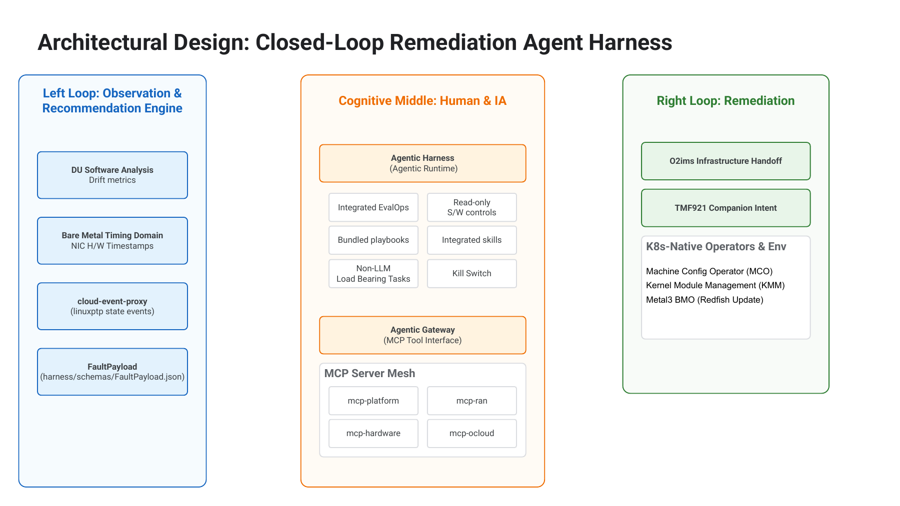
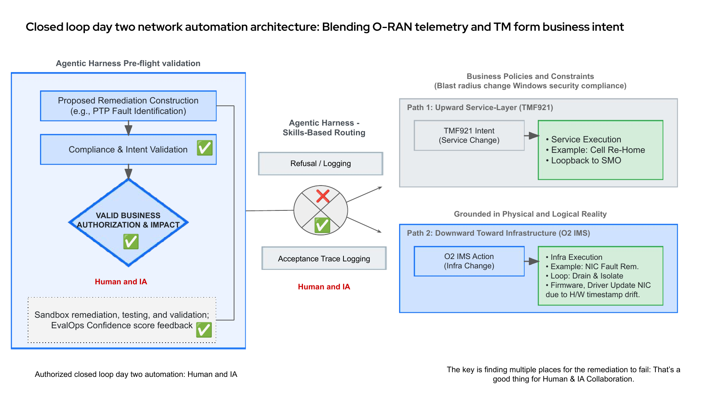
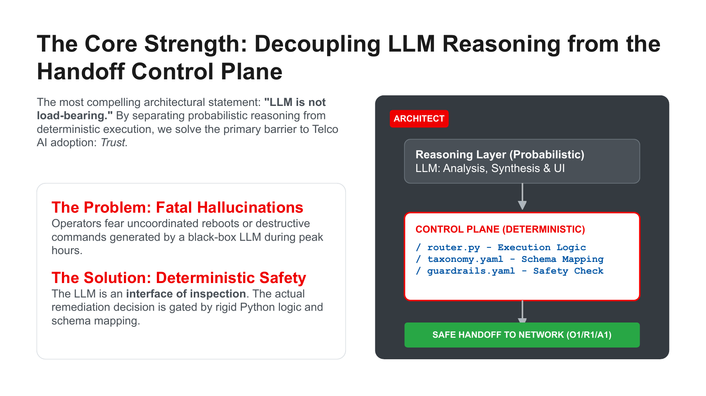
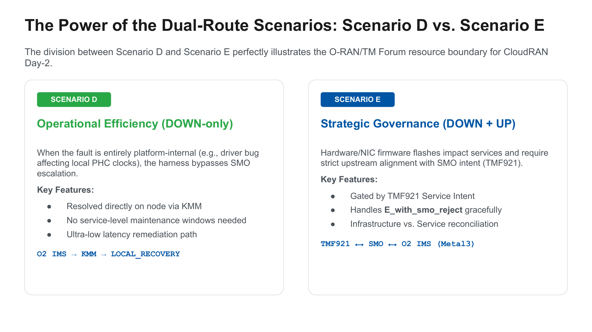
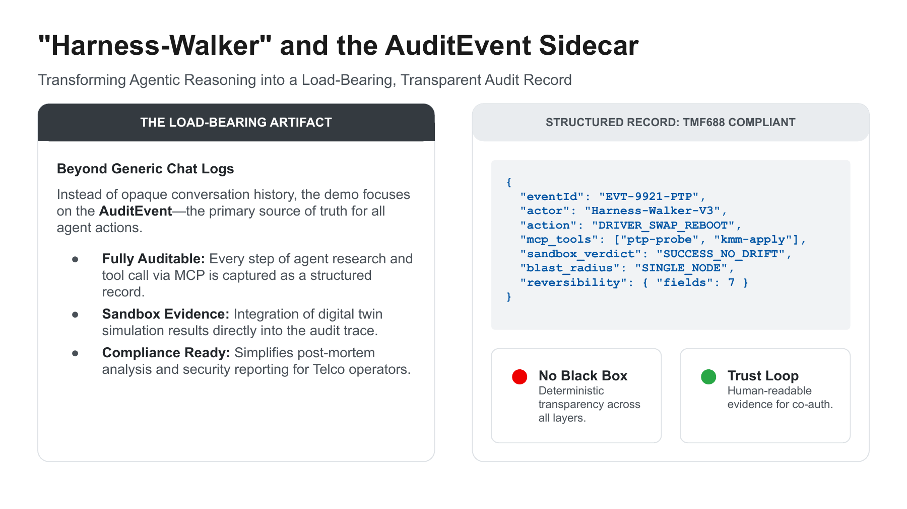
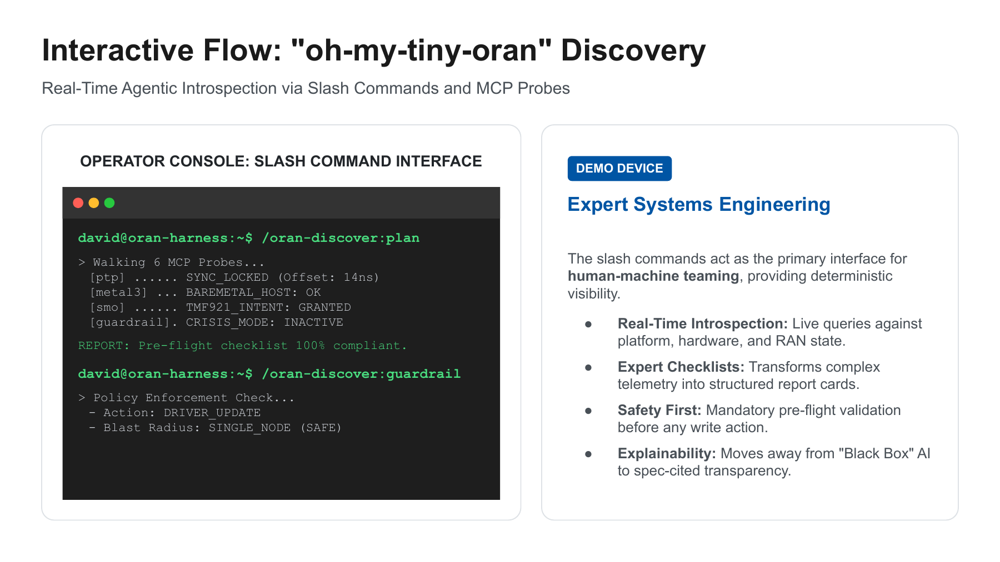

Audio talk track
Generated from the final demo talk track using Google Cloud Chirp HD / Charon voice.
MP3 asset
Conference rehearsal
Source text: Demo Talk Track
A conference handoff for the O-RAN Agent Harness: the durable research bench behind the talk, a runnable two-loop demo, the generated MP3 talk track, the YouTube video, and the diagrams that explain how the harness turns day-2 Cloud RAN evidence into governed remediation proposals.
Generated from the final demo talk track using Google Cloud Chirp HD / Charon voice.
Direct link: https://youtu.be/gFCSkPKoQNs
harness/.scenarios/ and 5G_O-RAN_SIM/bench/.I kept the pages that work best as standalone web visuals: clean architecture, dual-route routing, deterministic safety, auditability, and the interactive discovery flow. The repository still carries the deeper source material; this page shows the slides attendees can understand at a glance.






Give attendees both links: the repository for source and the page for the guided conference handoff.